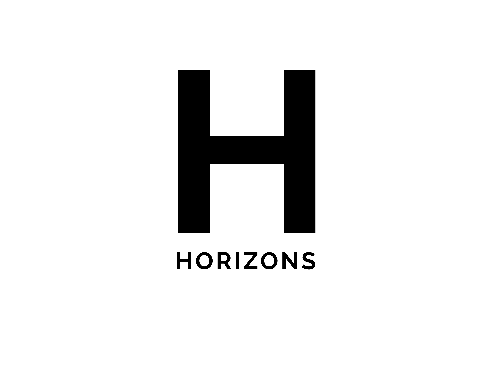
I was asked to help think of ways to redesign a tech bootcamp's branding and web design to be more broadly appealing. I started first with the logo. The name "Horizons" lent itself well
to all kinds of abstraction ideas, and I had lots of fun playing around with sunset imagery and lettering.
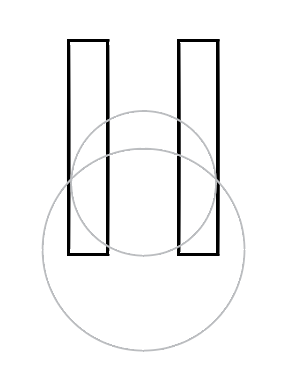
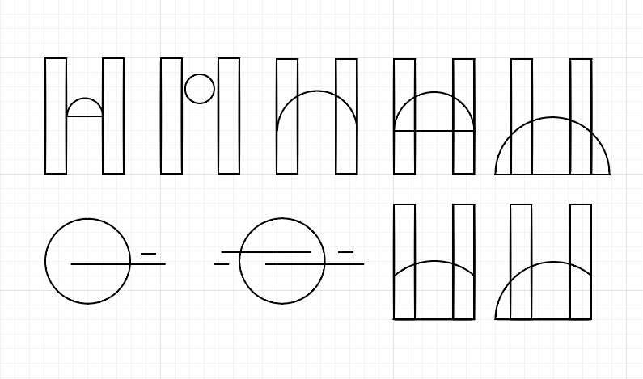
Tech bootcamps and startups in general love a certain level of esotericness, and therefore need emblems
that are just abstract enough to make cool, minimalist laptop stickers (because let's be real, that's what they really care about.) For the final logo, I opted for the horizon half-circle featured in all the sketches.
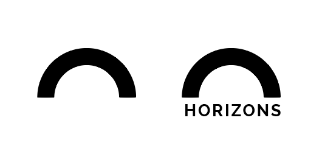

In general, I wanted the site to appear as neutral as possible across everything from fonts, colors, even density of content. (Our sites need to seem welcoming to women/POC; it's hard enough for them to get into tech!)
For colors, I went with a bright yellow, accented with black, grey, and blue.
Horizons offered a multi-faceted experience for its students, from the actual coding to the community, so I played with the concept of a "spinner" that showcased all four selling-points right off the bat. When a user clicks on the
verb, they're directed to its respective page.


 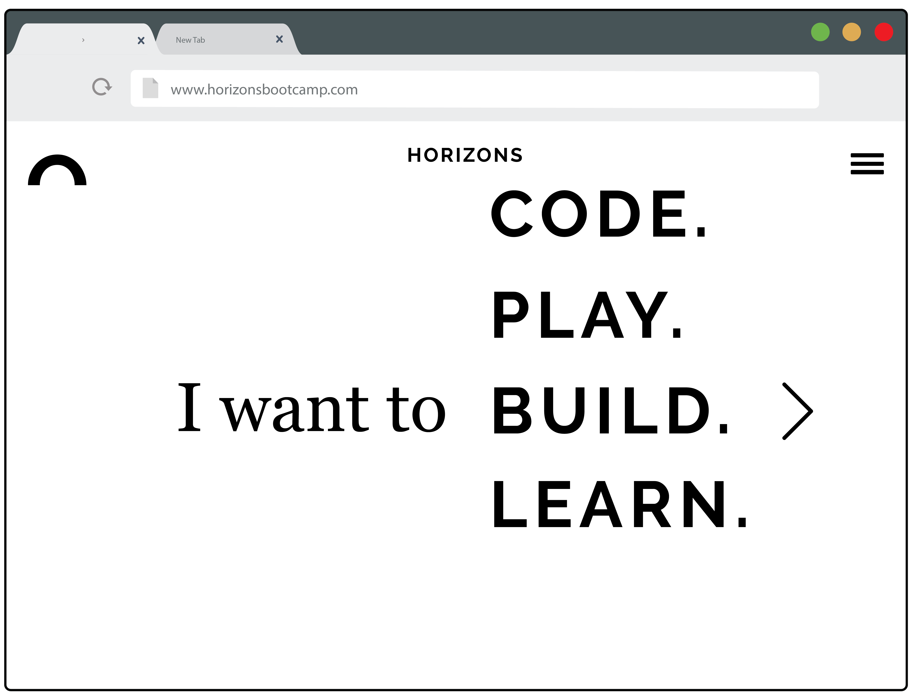
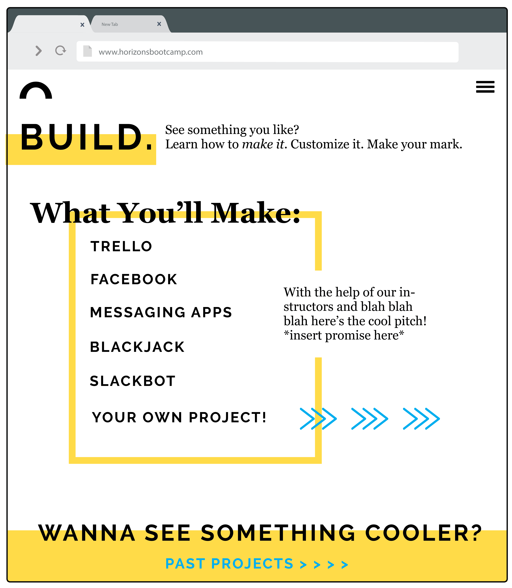
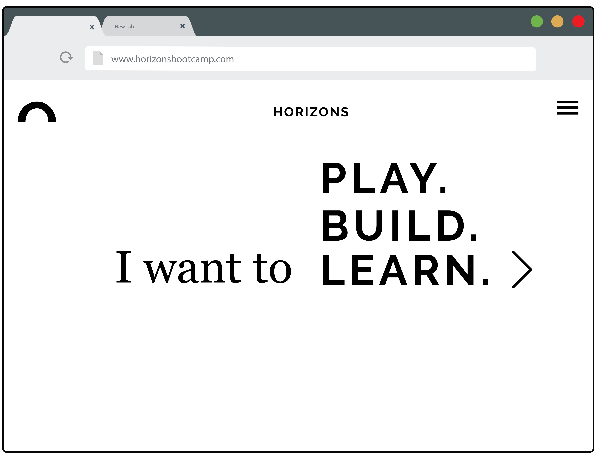
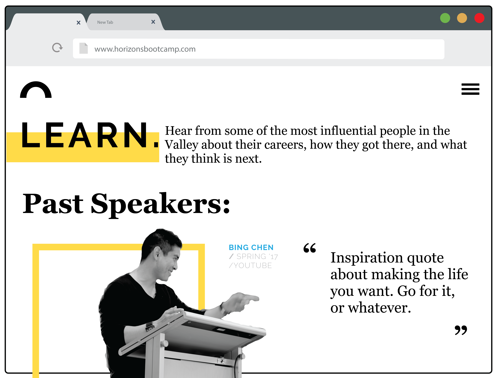
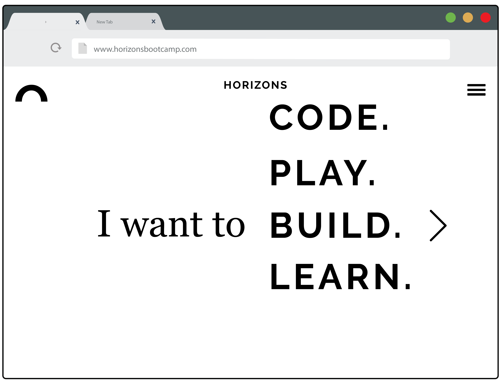
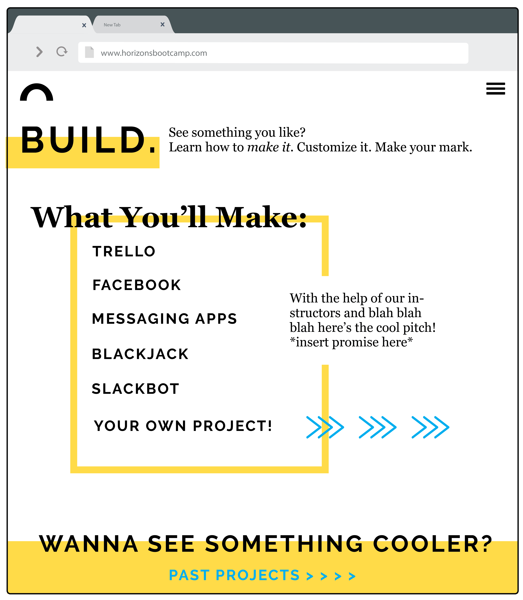
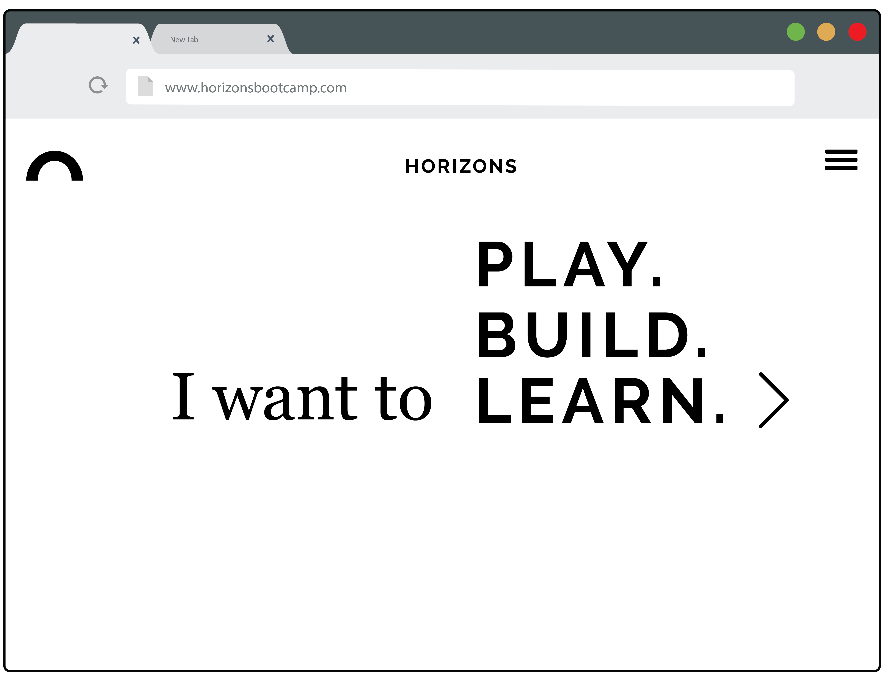
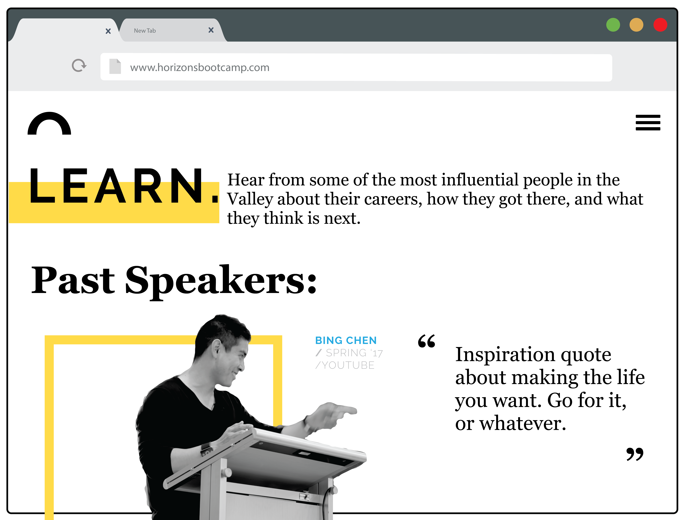